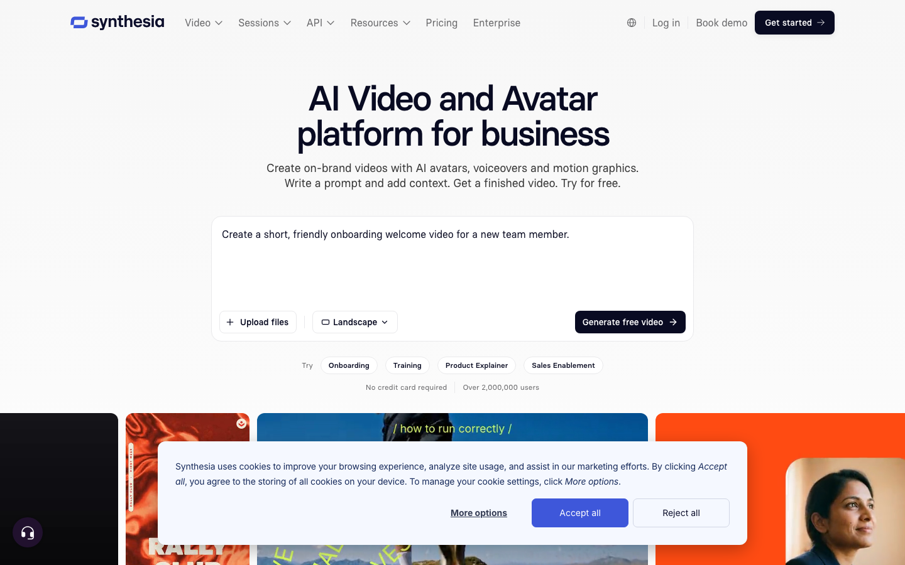
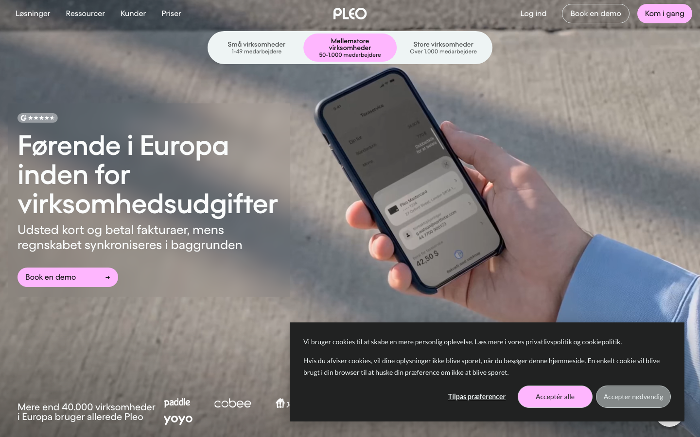
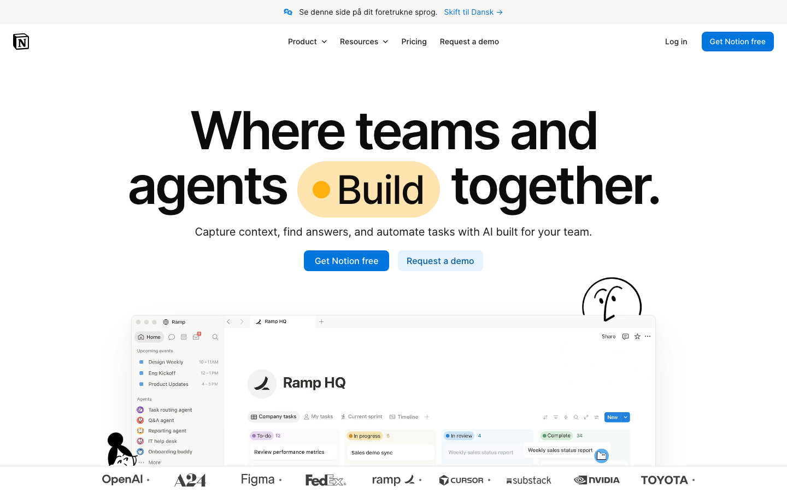
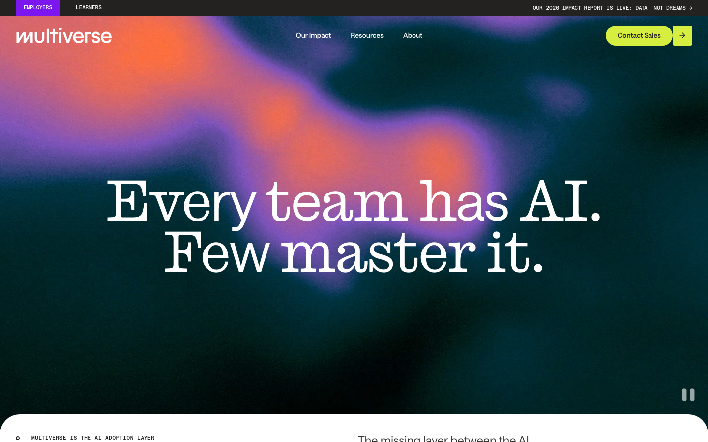
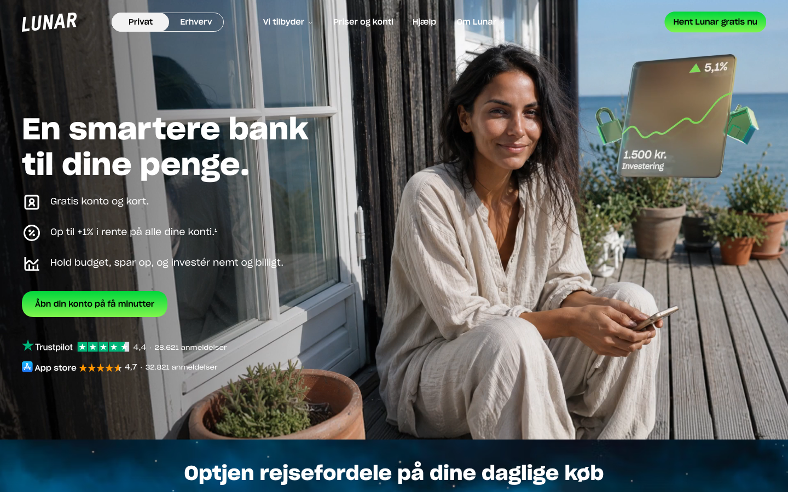
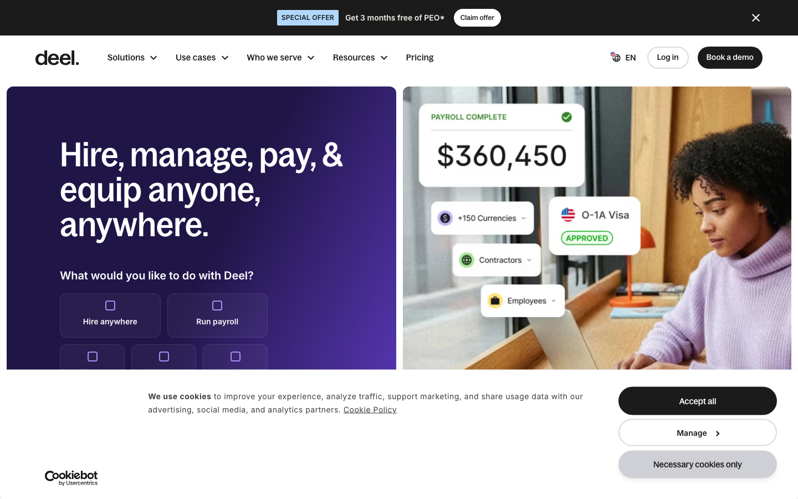
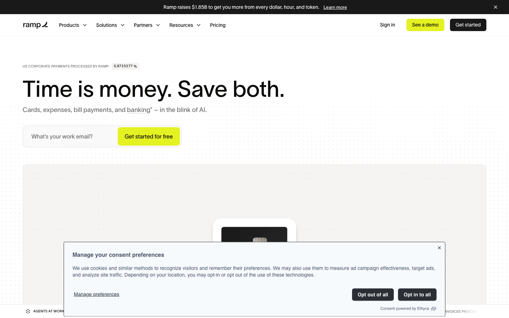
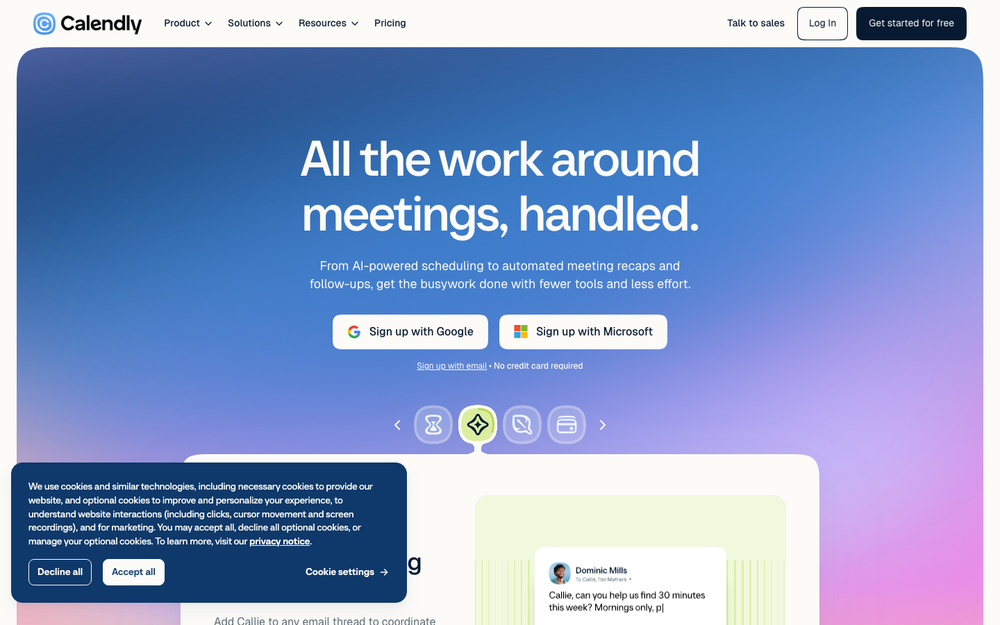
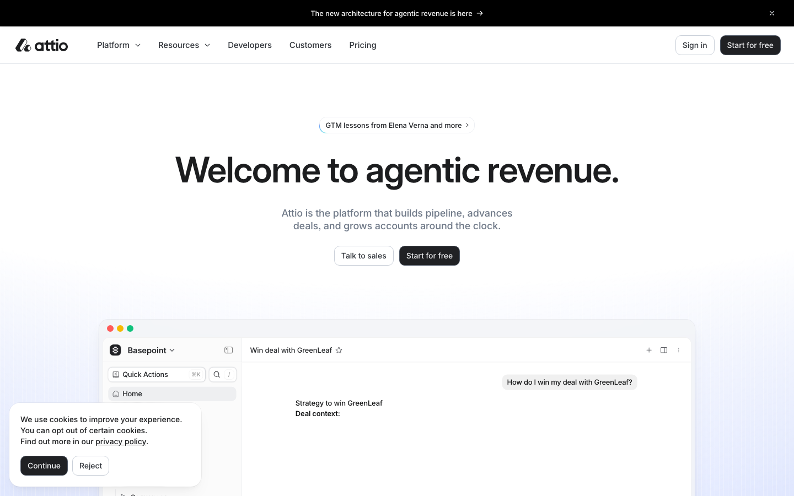
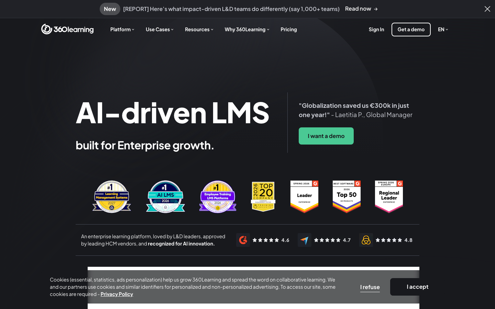

1Prøv det direkte i heroenSynthesia: et felt hvor man skriver sin opgave + forslag-knapper (Onboarding, Training…).Hos os: Et felt: “Skriv en opgave fra din hverdag” med forslag (Mail til kunde · Referat · Excel). Man trykker → ser en prompt blive skrevet og får en score 34 → 86. Gæsten prøver produktet på 10 sek.
2Vælg hvem du erPleo: Små / Mellemstore / Store virksomheder øverst. Lunar: Privat / Erhverv.Hos os: En lille switch Virksomhed / Privat over overskriften. Tekst, pris og knap skifter. (Privat-versionen findes allerede.)
3Ét ord der skifter i overskriftenNotion: “Where teams and agents ● Build together” – ordet i pillen skifter.Hos os: “AI-træning i [ChatGPT] til hele holdet” – pillen skifter ChatGPT → Copilot → Claude med logo. Erstatter rækken ‘Du træner i’.
4Overskrift der rammer et problemMultiverse: “Every team has AI. Few master it.” Kun tekst, stor serif.Hos os: Ny tekst-vinkel, fx “Alle har AI. Få bruger det godt.” eller “I har AI. Nu skal I kunne bruge det.”
5Tre korte fordele med ikonLunar & Coursera: 3 linjer med ikon under overskriften.Hos os: Erstatter brødteksten: 10 min om dagen · Opgaver fra jeres hverdag · Kursusbevis til AI-forordningen.
6Foto + små rigtige UI-chipsDeel & Lunar: ét foto, med 2–3 små produkt-chips der svæver ovenpå (“Payroll complete”).Hos os: Videoen/fotoet beholdes, men får 2 chips: “Score 86/100” og “Kursusbevis klar · 9 af 12”. Ikke store kort – små etiketter.
7Mail-felt i stedet for knapRamp: “What’s your work email?” + knap i ét felt.Hos os: [Din arbejdsmail] [Start et kursus] – ét skridt mindre for at komme i gang.
8Ikon-faner der skifter billedetCalendly: en række ikoner under knapperne; hvert ikon viser en ny del af produktet.Hos os: 4 faner: Lær · Øv · Score · Bevis – billedet til højre skifter til den del af platformen.
9Stort produktbillede under centreret tekstAttio, Linear, Notion, Docebo: tekst i midten, rigtig app-skærm nedenunder.Hos os: Overskrift centreret, og øvemiljøet som stor skarp skærm (ikke laptop-foto) der fylder bredden.
10Tillid lige ved knappen360Learning/Lunar/Intercom: stjerner, priser, anmeldelser ved knappen.Hos os: Vi har ingen anmeldelser endnu → ærlig version: Data i EU · Databehandleraftale · Dækker AI-forordningens art. 4. (Og demo-logobåndet fjernes eller omskrives.)